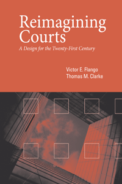

<body bgcolor="#FFFFFF" text="#000000" link="#0000FF" vlink="#CC0000" alink="#CC0000"><center><hr width="350" size="1" align="center" noshade>Promotes practical reform ideas to make courts more effective, more efficient, and more customer friendly<hr width="350" size="1" align="center" noshade><p><a href="https://cdcshoppingcart.uchicago.edu/Cart/ChicagoBook.aspx?ISBN=9781439911679&&PRESS=temple" target="_top">Buy this book!</a> | <a href="https://cdcshoppingcart.uchicago.edu/Cart/Cart.aspx?PRESS=temple" target="_top">View Cart</a> | <a href="https://cdcshoppingcart.uchicago.edu/Cart/Cart.aspx?PRESS=temple" target="_top">Check Out</a></p><p></p></center><!--none//--><h1>Reimagining Courts</h1>
<H2>A Design for the Twenty-First Century</H2>
<h3>Victor E. Flango and Thomas M. Clarke</h3>
<P>cloth 1-4399-1167-3 $64.50, Dec 14, <FONT COLOR=#990033>Available</FONT>
<br>Electronic Book 1-4399-1169-X $64.50 <FONT COLOR=#990033>Available</FONT>
<BR> 214 pp
5.5 x 8.25
9&nbsp;tables 4&nbsp;figures
</P><P>In their timely and topical book, <I>Reimagining Courts</I>, Victor Flango and Thomas Clarke argue that courts are a victim of their own success. Disputes that once were resolved either informally in the family or within the community are now handled mainly by courts, which strains government agency resources. The authors offer provocative suggestions for a thorough overhaul of American state and local courts, one that better fits the needs of a twenty-first century legal system.
<P><I>Reimagining Courts</I> recommends a triage process based upon case characteristics, litigant goals, and resolution processes. Courts must fundamentally reorganize their business processes around the concept of the litigant as a customer. Each adjudication process that the authors propose requires a different case management process and different amounts of judicial, staff, and facility resources.
<P><I>Reimagining Courts</I> should spark much-needed debate. This book will be of significant interest to lawyers, judges, and professionals in the court system as well as to scholars in public administration and political science.
<BR>&nbsp;<h2>Excerpt</h2><P>Excerpt available at <a href="http://www.temple.edu/tempress">www.temple.edu/tempress</a></p>
<BR>&nbsp;<h2>Reviews</h2>
<p><i>"The authors propose a series of linked reforms leading toward more, and more intelligent, use of administrative bodies and innovations like drug courts. Flango and Clarke are associated with the National Center for State Courts, and their suggestions are informed by the research done by that respected organization.... The proposals are intriguing and well thought out; many extend experiments currently being tried. Summing Up: Recommended."</i> <br>&#151<b><i>Choice</i></b>
<p><i>"[A]n important book discussing needed reforms in our American judicial system, written by two individuals who have been privy to the inner workings of state court systems for a number of years.... The crux and most important part of the book is the problem-solving process and the implications thereof.... All in all, Flango and Clarke present a thought-provoking compilation of ideas for court reform."</i> <br>&#151<b><i>Judicature</i></b>
<p><i>"I agree with Flango and Clarke that courts have been too reticent to rethink what they do and how they do it. Many of the changes they are suggesting can be done internally by the judges and administrative leaders and through negotiations with the Bar. Some require changes in law or state rules, but they all are achievable by those who adopt Flango and Clarke’s vision or a variation of it. Flango and Clarke wisely cite courts that already have adopted and successfully implemented each of their suggestions. The gap between Flango and Clarke’s vision and the cited cutting-edge courts is that no court has implemented all of the ideas. The authors know it will be hard for many courts to adopt some of the ideas soon and maybe even after many years. That realization does not undermine the value of putting the ideas out there so they can be adopted and proven by courts that see their merits."</i> <br>&#151<b><i>Thinking Out Loud</i></b>
<BR>&nbsp;<h2>Contents</h2><P>
<p><b>List of Figures and Tables
<br>
<br>Acknowledgments
<br>
<br>Overview</b>
<br>&nbsp;<i> Vision of the New Court Process
<br>&nbsp; Courts as though Litigants Mattered
<br>&nbsp; The Court Response
<br>&nbsp; Financial Problems Remedies
<br>&nbsp; Plan of This Book</i>
<br>
<br><b>Part I. Aligning Image with Reality
<br>1. Why Courts Need to Be Redesigned</b>
<br>&nbsp;<i> The Challenge: Burgeoning Caseloads Countertrends
<br>&nbsp; Financial Crisis: Engine for Change</i>
<br><b>2. What Courts Actually Do</b>
<br>&nbsp; <i>Courts Settle Traffic Cases
<br>&nbsp; Criminal Cases
<br>&nbsp; Civil Cases</i>
<br>
<br><b>Part II. Triage and the Four Case-Processing Tracks
<br>3. Triage: Separating Cases by Processing Required</b>
<br>&nbsp; <i>The Need for Triage
<br>&nbsp; Four Adjudicatory Processes
<br>&nbsp; The Adversary Process and Courts Are Intertwined
<br>&nbsp; Routine Cases: The Dispositional Process
<br>&nbsp; The Problem-Solving Process
<br>&nbsp; Triage by Issue
<br>&nbsp; Triage and Processing Tracks</i>
<br>
<br>Appendix to Chapter 3. Functional Equivalents to Triage: Historical Strategies
<br>
<br><b>4. The Adversary Process</b>
<br>&nbsp; <i>The Adversary Process Should Be Reserved for Trials
<br>&nbsp; Decreasing Trials
<br>&nbsp; Triage: Trial Worthiness
<br>&nbsp; Role of the Judge: Umpire
<br>&nbsp; Court Staff
<br>&nbsp; Facilities
<br>&nbsp; Court Performance
<br>&nbsp; Proposed Remedies</i>
<br>
<br>Appendix to Chapter 4. The Decreasing Number of Jury and Bench Trials
<br>
<br><b>5. The Dispositional Process</b>
<br>&nbsp; <i>Criminal Processing
<br>&nbsp; Civil Cases
<br>&nbsp; Triage
<br>&nbsp; Role of the Judge: Adjudicator
<br>&nbsp; Court Staff
<br>&nbsp; Facilities
<br>&nbsp; Court Performance
<br>&nbsp; Implications</i>
<br>
<br><b>6. The Administrative Process</b>
<br>&nbsp; <i>Purpose
<br>&nbsp; Caseload
<br>&nbsp; Triage
<br>&nbsp; Role of the Judge: Administrator
<br>&nbsp; Alternatives</i>
<br>
<br>Appendix to Chapter 6. Substituting Court Jurisdiction with Administrative Jurisdiction: An Example
<br>
<br><b>7. The Problem-Solving Process</b>
<br>&nbsp; <i>Specialized Problem-Solving Courts
<br>&nbsp; Unified Family Courts
<br>&nbsp; Workload
<br>&nbsp; Role of the Judge: Problem Solver
<br>&nbsp; Court Staff
<br>&nbsp; Facilities
<br>&nbsp; Triage
<br>&nbsp; Can Specialized Problem-Solving Courts Be Reconciled with Court Reform?
<br>&nbsp; Are Triage and Coordination the Answer?</i>
<br>
<br><b>8. Implications of the Problem-Solving Approach for Court Reform</b>
<br>&nbsp; <i>Two Separate Processes: The Legal Model and the Medical Model
<br>&nbsp; Medical Model in Corrections
<br>&nbsp; Medical Model versus Legal Model in Courts
<br>&nbsp; Treatment Focus
<br>&nbsp; Why the Two Processes Must Be Kept Separate
<br>&nbsp; Mainstreaming Problem-Solving Principles
<br>&nbsp; Is Treatment a Court Responsibility?</i>
<br>
<br><b>Part III. Making the Reimagined Court a Reality
<br>9. Case-Triage Strategies in Action</b>
<br>&nbsp; <i>Reducing Jurisdiction
<br>&nbsp; Increasing Litigant Choice
<br>&nbsp; Streamlining Processes
<br>&nbsp; Optimizing Scarce Resources
<br>&nbsp; Implications for Judicial and Court Staff Selection, Education, and Training
<br>&nbsp; Putting It All Together</i>
<br>
<br><b>10. Implementing the Vision of a Modern Court</b>
<br>&nbsp; <i>The Worldview of the Modern Court
<br>&nbsp; Suggestions for Reform
<br>&nbsp; Barriers to Implementation
<br>&nbsp; Getting There from Here</i>
<br>
<br><b>Notes
<br>Bibliography
<br>Index</b>
</P><BR>&nbsp;<H2>About the Author(s)</H2>
<P><b>Victor E. Flango</b> has recently retired as Executive Director, Program Resource Development at the National Center for State Courts.</P>
<P><b>Thomas M. Clarke</b> is Vice President for Research and Technology at the National Center for State Courts.</P>
<BR><H2>Subject Categories</H2>
<p><A HREF="/tempress/law.html" TARGET="_top">Law and Criminology</a>
<BR><A HREF="/tempress/political.html" TARGET="_top">Political Science and Public Policy</a>
</p>
<p align="center"><a href="https://cdcshoppingcart.uchicago.edu/Cart/ChicagoBook.aspx?ISBN=9781439911679&&PRESS=temple" target="_top">Buy this book!</a> | <a href="https://cdcshoppingcart.uchicago.edu/Cart/Cart.aspx?PRESS=temple" target="_top">View Cart</a> | <a href="https://cdcshoppingcart.uchicago.edu/Cart/Cart.aspx?PRESS=temple" target="_top">Check Out</a></p><p><font face="Arial" size="1"><a href="copyright.html" onMouseOver="window.status='Web Copyright Policy';return true;" onMouseOut="window.status=''" title="Web Copyright Policy">&copy;</a> 2016 <a href="http://www.temple.edu" target="new" onMouseOver="window.status='Link to Temple University home page';return true;" onMouseOut="window.status=''" title="Link to Temple University home page">Temple University</a>. All Rights Reserved. http://www.temple.edu/tempress/titles/2334_reg.html</font></p>